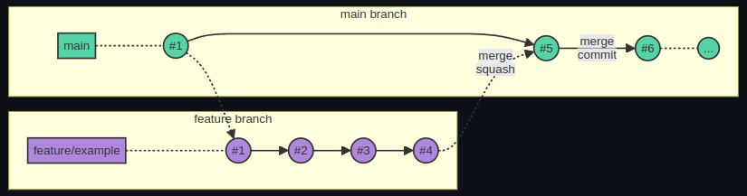

Cómo contribuir al proyecto¶
Issues¶
En este proyecto, se utilizan las issues como herramienta para proponer cambios (plantilla de feature) o para documentar errores encontrados en la aplicación (plantilla de bug).
Una issue estará asociada a una pull request, sobre la que se harán los cambios que resuelvan la issue.
Ramas¶
Este es el nombrado de las ramas a seguir en el repositorio:
main: Es la rama principal, base para todas las demás ramas. Sobre ella se crean los tags correspondientes a cada una de las entregas parciales. Es la única rama de larga duraciónfeature/: Prefijo para las ramas que añaden nuevas funcionalidades o modifican las ya existentes.bug/: Prefijo para las ramas destinadas a corrigir fallos.docs/: Prefijo para las ramas que solo incluyen actualizaciones en la documentación.
Además de esto, el nombre de la rama incluirá el prefijo GH, seguido del
número de la issue asociada, separado con un guión. Por ejemplo, si los
cambios añaden una nueva funcionalidad y están asociados a la issue número 1, el
nombre de la rama sería feature/GH-1
Commits¶
Los commits son el elemento más básico de sistema de control de versiones Git. Su uso correcto facilita el mantenimiento y la revisión en los repositorios. A continuación, se lista una serie de recomendaciones sobre los commits:
- Los commits deben de estar firmados
- Los mensajes de los commits deben ser claros y concisos.
- Los commits deben de ser atómicos
- Se recomienda utilizar conventional commits
Pull requests¶
En este proyecto, seguiremos la relación 1:1 entre issues y pull requests. Teniendo esto en cuenta, a continuación, se listan algunas directrices a la hora de crear, revisar y mergear pull requests:
- Definir correctamente los campos de la PR:
- La rama destino SIEMPRE debe de ser la rama
main. - Titulo descriptivo, siendo válido utilizar el mismo que el de la issue siempre y cuando la PR cierre esa issue.
- Añadir
Closes #<numero_de_issue>en la descripción para cerrar la issue automáticamente tras cerrar la PR. - Asignar la PR al usuario que vaya a realizar los cambios. Añadir un revisor, que debe ser el encargado de la sección a la que pertenece la issue asociada.
- Añadir las etiquetas adecuadas a la PR
- NO enlazar la PR a un proyecto, se enlaza únicamente la issue.
- Utilizar el squash merge
para no ensuciar la rama
maincon excesivos commits. - Aquella persona asignada a la PR es quien debe mergear los cambios.
- Antes de mergear los cambios, el revisor tiene que cerrar todos los hilos de discusion abiertos, así como aprobar la PR.
- En caso de que se ejecuten workflows, tienen que ejecutarse con éxito antes de mergear.
- Asegurarse de que la rama está actualizada con main antes de mergear.
Flujo de trabajo¶
El flujo de trabajo utilizado en este proyecto es Trunk-based development. Se ha escogido este flujo de trabajo debido a que, al generar un tag de "release" cada semana y ser un proyecto relativamente pequeño, nos parece el modelo más apropiado.
En este apartado, se explica cómo sería el flujo de trabajo de un desarrollador para contribuir a este proyecto paso a paso:
1) Creación de una issue para exponer la tarea a realizar (ver el apartado Issues). 2) Creación de una rama, con el nombre correcto (ver el apartado Ramas). 3) Realización de los cambios y subida de la rama al repositorio remoto. 4) Creación de la Pull Request (ver el apartado Pull requests). 5) Peer reviewing por parte del revisor de la PR. 6) Una vez el revisor aprueba la PR, cerrar, mergear y borrar la rama con los cambios.

Formato del código¶
En este proyecto, la identación de los ficheros se hace utilizando espacios, con un ancho de 2 espacios para cada nuevo nivel. Aquellos cambios que incluyan tabulaciones.
Con respecto a la validación del código, a continuación, se muestra la lista de linters utilizados en los ficheros del proyecto:
- YAML:
- yamllint
- Markdown:
- markdownlint